11.13.18
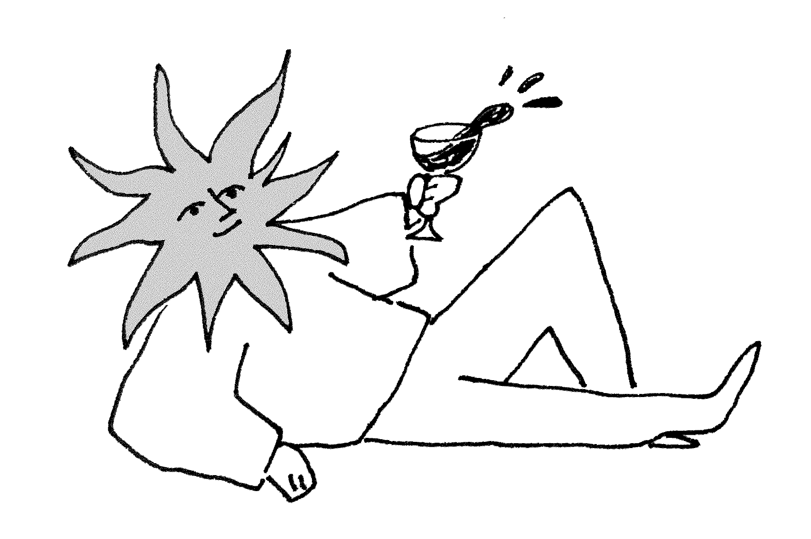
the sun sets on the busybody
11.12.18
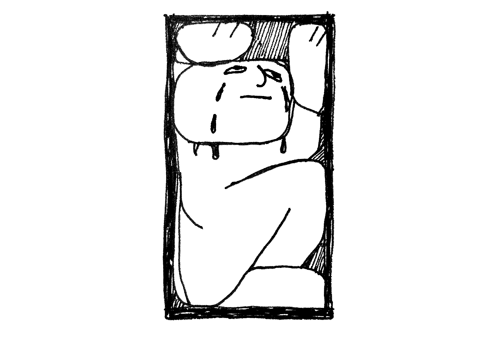
the calcified shell protects the fastbody as it accelerates and collides with everything in its path. the fastbody is violent and knows no kindness. its first love is CASH and its final love is IMMORTALITY.
the spongey exterior of the longwalker houses a radiating, golden heart. the longwalker moves from shelter to shelter with its pudgy fingers crossed, praying that the roaming fastbody does not pulverize the abode they have just inhabited.
11.11.18
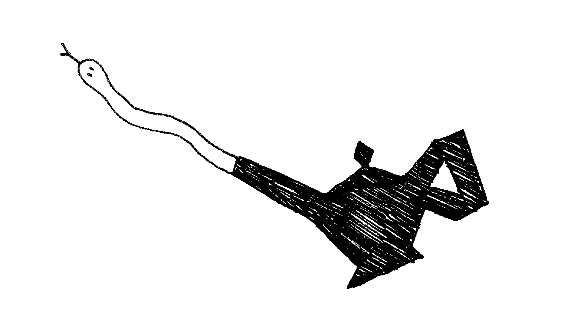
by the year 3000, the only occupation left will be: storyteller
11.5.18
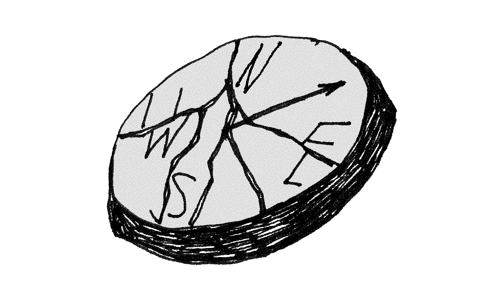
this time i lost my mind. i looked out the window and nothing came to mind. the wind was rushing by me and when i looked at my hand--the compass i was holding had cracked and series of howling screams were emanating from its broken surface. all i could see was the setting sun. it told me two things:
1. the world would burn tomorrow
2. tomorrow would never come because it was night world now
10.18.18
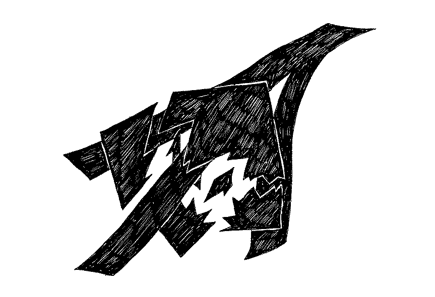
the window is shattered as night descends. all sorts of monsters crawl through. the dark hills have sharp points that strike towards the moon.
10.17.18
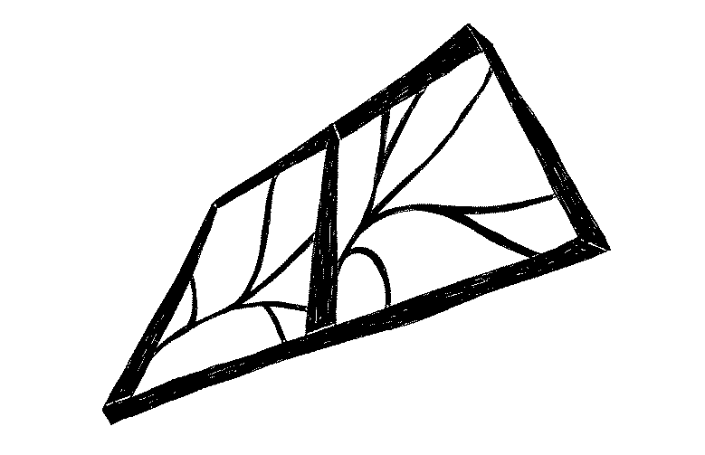
visited the train again.
a different station but it's all the same.
10.16.18
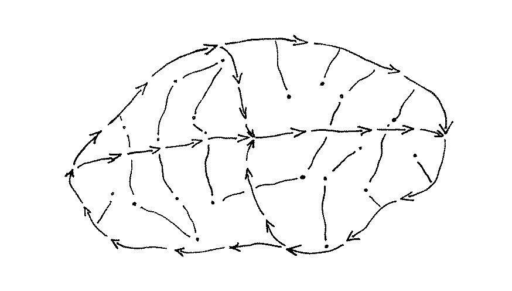
you are born here
you learn of the speed
speed at all costs
your body has accepted these conditions
you are airplane
jetliner
you are f35
your nose cuts the air
you split the oxygen
10.12.18
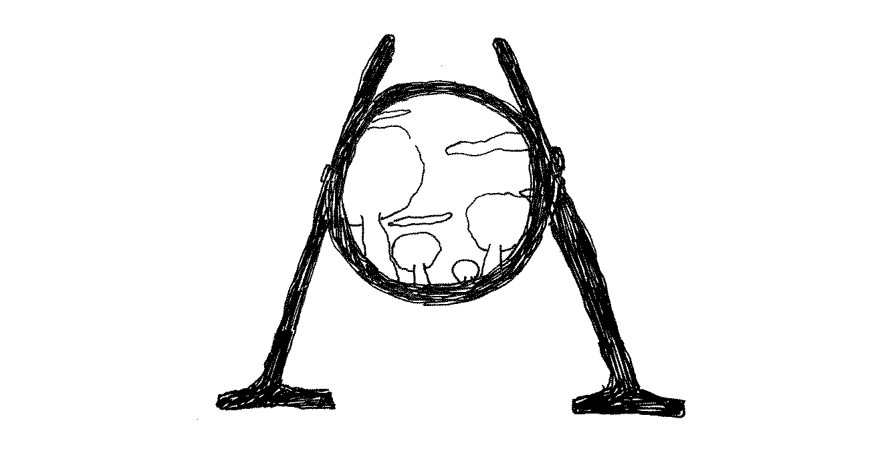
this window has legs. i drew it on a scrap piece of paper while i waited for something. or maybe i was listening.
10.10.18
born here. died here.
10.9.18
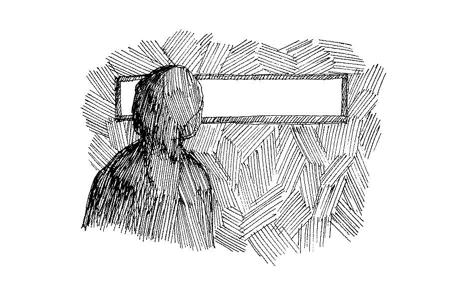
outside is vacuum. it eats and it pulls and it tears. inactively squashing. arbitrarily stretching.
10.6.18
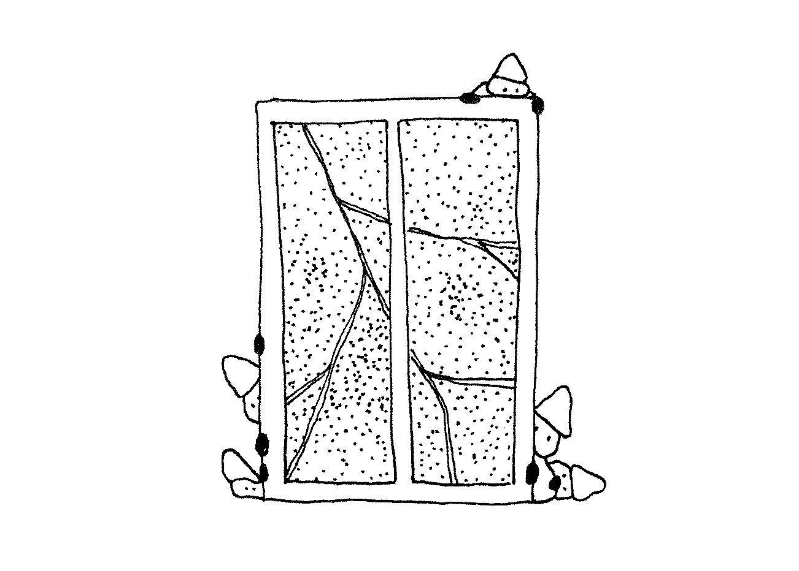
this morning: another crisis. it is no surprise anymore, and each day we chip away towards the core.
the window pane is shaking. beyond it is an image of something. i worry that if the window breaks, the image will be destroyed along with it, or else i can finally move through the threshold of the frame and move into the image.
10.5.18
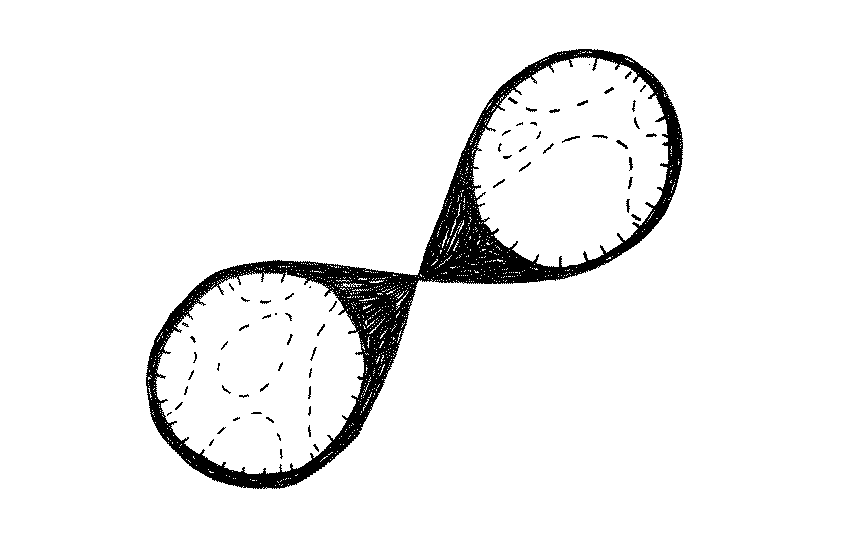
i am anti-speed. please think of the children. please. cool it. please. we are atop the wing of a jet plane and the only thing keeping us attached are our fingernails. i have this problem where i chew my fingernails. it's really hard for me to hold on to the wing of this airliner.
10.2.18
looking ahead and there is no color. there is a fog in my head and it fills it up, pushes on the limits, and the fog buzzes with a frequency that leaves me speechless. i wish i could say it hummed but it does not. i am stretched between baltimore and richmond, turkey and usa, loving and vomitting, working and crying.
the windows in my apartment look out at a brick wall and the sun hardly ever comes through. i've had to transport all of my plants to cevahir's place in baltimore where there's more sun.
9.30.18
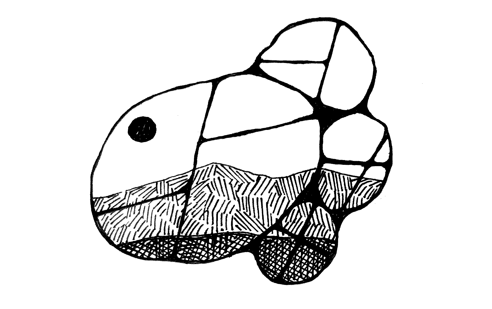
sat in my car as i watched the amtrak train begin to pull away. the windows of the train were too dark from the outside that i couldn't see in. it wouldn't have mattered because the tracks are raised above the parking lot and i would only be able to see the ceiling of the train car anyways. i noticed some flecks on my windshield as i was looking at the train--they irritated me.
the top portion of the windshield is tinted to reduce the strength of the sun. i've always assumed my windows were like this because my car is from arizona. not sure if other car windows are like mine. i cracked my door open to take a picture of the trees and the roof of the station and the train before it left--i didn't want the flecks to show up in the photo.
the first thing people notice in my car is the moonroof. it's pretty big. it's one of my favorite things about the car. but it's been a long time since i've lived in a place where i can see the stars at night. and it's been a long time since i've had the time to take a drive somewhere that's not a city.
something heavy moved on top of me and my throat tightened after the train had left. i started the car.
9.29.18
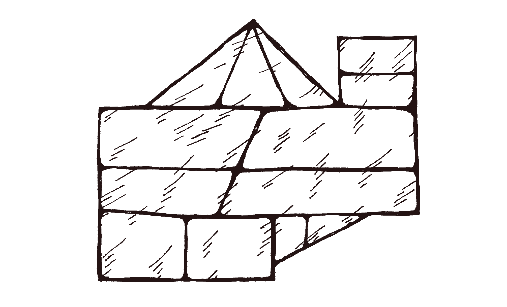
"...the shadows of the sanctuary, the dark aisles, the secret passages, the low doors, all of this evokes in a Gothic church the labyrinths of the forests; it all makes us conscious of religious awe, the mysteries, and the divinity. ...The Christian architect, not satisfied with building forests, wanted, as it were, to imitate their murmurs, and by the help of the organ and suspended bronze he has associated with the Gothic temple the noise of the winds and the thunder that rolls through the depths of the forest."
François-René de Chateaubriand
9.28.18
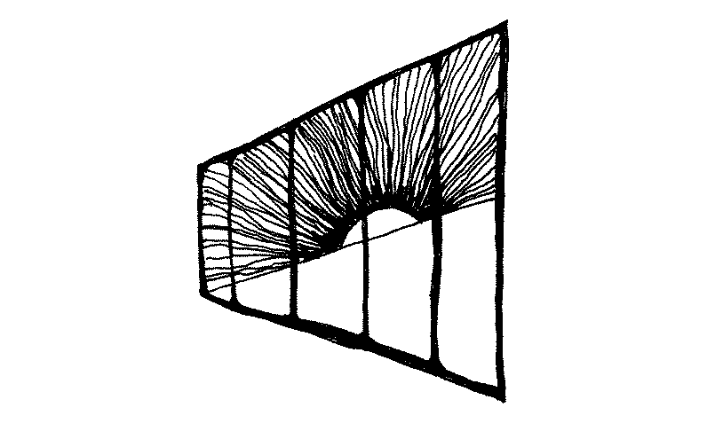
where is the sunset? in or out?
we have forgotten the significance of the sunset
but our body remembers.
9.27.18
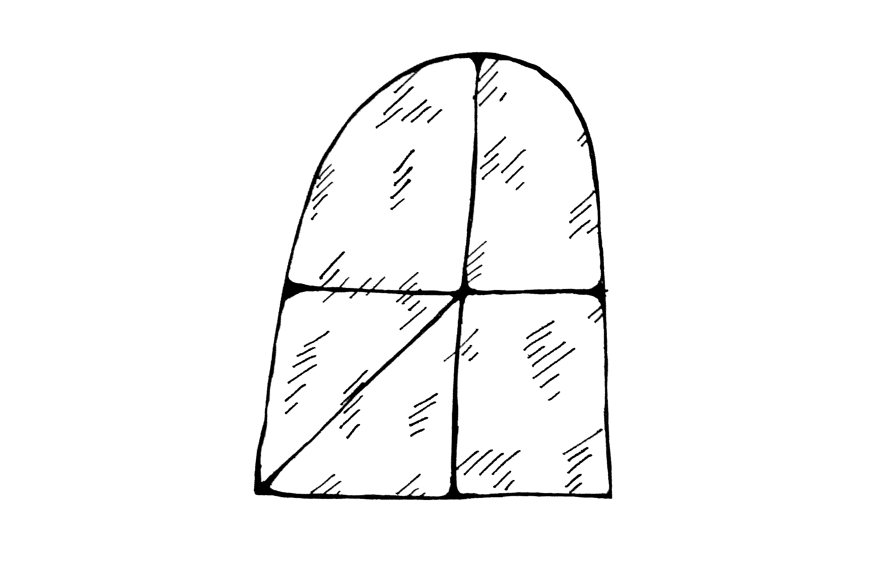
the screen is an inversion or distortion of the window. with a window we can be inside or outside--we can look out or in, we can open the window and move through it, sit halfway between it.
with a screen we are always outside, looking in. how do we move ourselves inside and look back at the figure staring through the surface? how do we submerge ourselves in the surface? what good would this do?
9.26.18
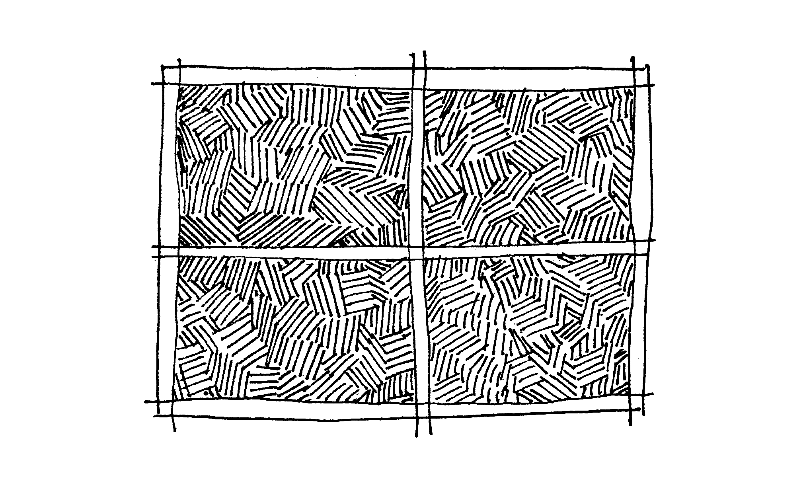
dark outside
9.21.18
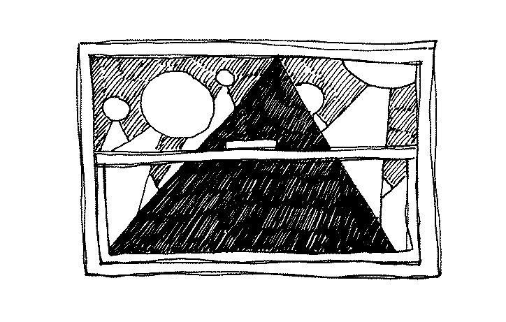
outside, things move by
9.18.18
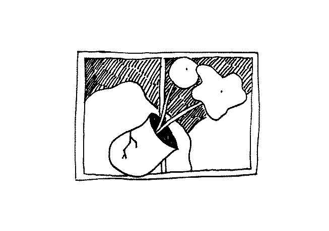
The flower pot falls from the window sill.
It is already cracked...
9.15.18
-spook.gif-
9.14.18
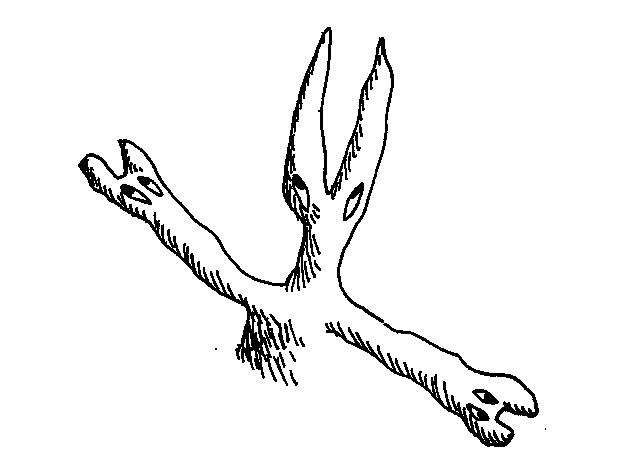
A rendition of my object selected for this upcoming week's document prompt. I named it Belle's Hydra and it is idol to Florence the hurricane.
I can't tell if I'm a spiritual person, but it might seem so...at times. I fluctuate between some kind of optimistic nihilism(?) and a strange form of spiritualism. I don't read enough on either subjects to formally diagnose myself. Maybe they're the same thing.
9.11.18
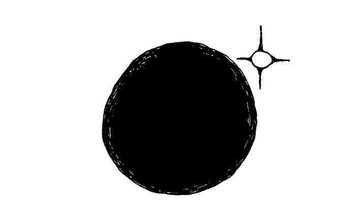
The fire alarm woke me up at 7 in the morning. All I grabbed was my laptop. As soon as I had left I felt sad that I didn't grab anything else. I thought I should get renter's insurance.
9.10.18
Haven't had time to breathe.
9.9.18
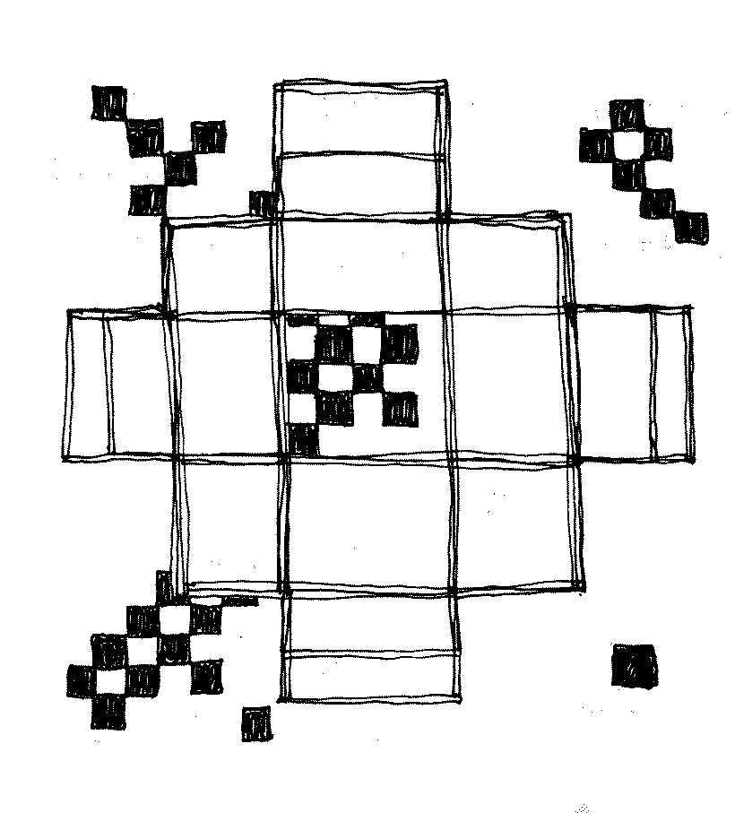
My first memory: I am small, walking next to an outdoor pool, the sun makes the world look orange and I think a grandma is nearby.
9.8.18
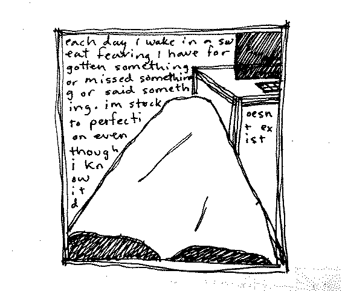
9.7.18
Sorry for the distance between posts of what is supposed to documentation of a daily practice. I think I have really suffered from it.
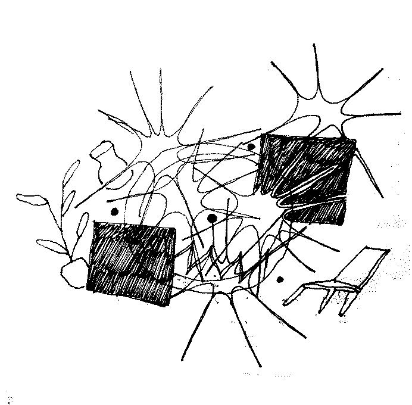
I have forgotten my hand and think too much about making work that I never sit down to actually make. I'm so caught up in spirals of self doubt and anxiety that I forget that I can speak. For now I will try to sketch each day.
8.28.18
Still thinking about a daily practice, but for now I will share some thoughts.
The person above me in my apartment complex vacuums every single day. At first I thought someone was trying to skateboard as I could hear wheels rolling around, but the faint hum of the vacuum gave the object away. The cleaning happens either early in the morning or around 10 at night. It drives me crazy.